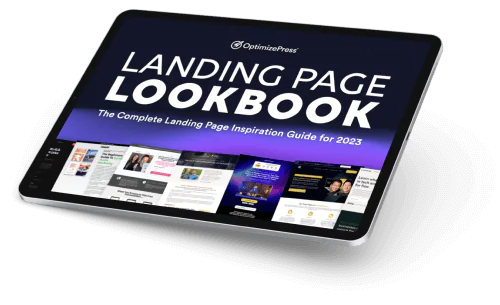

18 Best Blog Designs You Need to See in 2025
last updated: 2025-01-15
Thinking of reinventing your blog and looking for new blog design ideas in
2025?
The best blog designs are a mix of beautiful design and functionality so
readers stay engaged and can navigate with ease.
In this post, we’ll share 18 of the best blog designs we've been following
in 2025.
From minimalist to bold, these trends will inspire your next website
refresh and show you how to create a user focussed experience that
increases engagement.
What Makes a Great Blog Design?
A great blog design means creating more than just a pretty layout. You
need to create an experience that will keep readers engaged and coming
back for more.
Here are the key elements to keep in mind:
-
User-Friendly Navigation: Simple menus and clear
structure can help site visitors find what they need without hassle.
-
Responsive Design: With more users on mobile devices,
a great blog design must have mobile responsiveness, adapt to
different screen sizes for the best readability and functionality.
-
Fast Loading Times: A slow website can drive visitors
away. Optimizing images and using efficient coding practices can help
ensure your blog loads quickly.
-
Consistent Branding: A cohesive color scheme,
typography, and logo can help establish your blog's identity and make
it memorable to readers.
Together, these three form the base of a blog design that looks good and
works well.

Learn What's Working Now from 120+ Top Landing Pages in our
FREE Guide
Get Access to 120+ Landing Page Swipes from Creators, Digital Marketers
and Experts + insights and steps to boost your landing page conversions.
Download the Lookbook Now
Common Design Trends Among the Best Blogs of 2025
Here are the top design elements and features of the best blogs this
year:
-
Minimalist Layouts: Clean, simple designs with plenty
of white space are popular for their readability and modern look.
-
Bold Typography: Using large, eye-catching fonts can
help important content stand out and create a strong visual hierarchy.
-
Vibrant Colors: Bright, bold colors are being used to
create a lively and engaging atmosphere on blogs.
-
Interactive Elements: Features like quizzes, polls, and
interactive infographics can boost engagement and make the blog more
enjoyable for readers.
18 Best Blog Website Examples to Inspire You
Here are 18 beautiful blog designs that showcase the best of creativity, user experience and functionality for 2025.